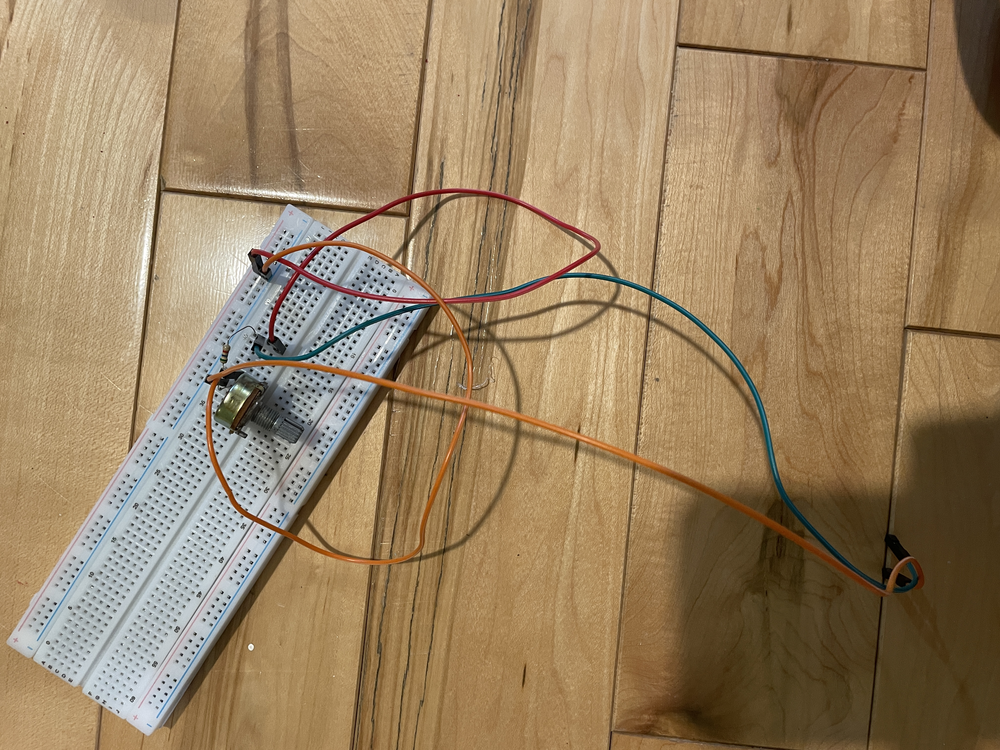
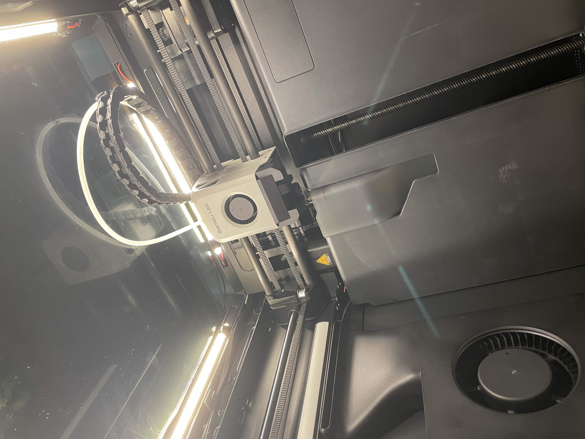
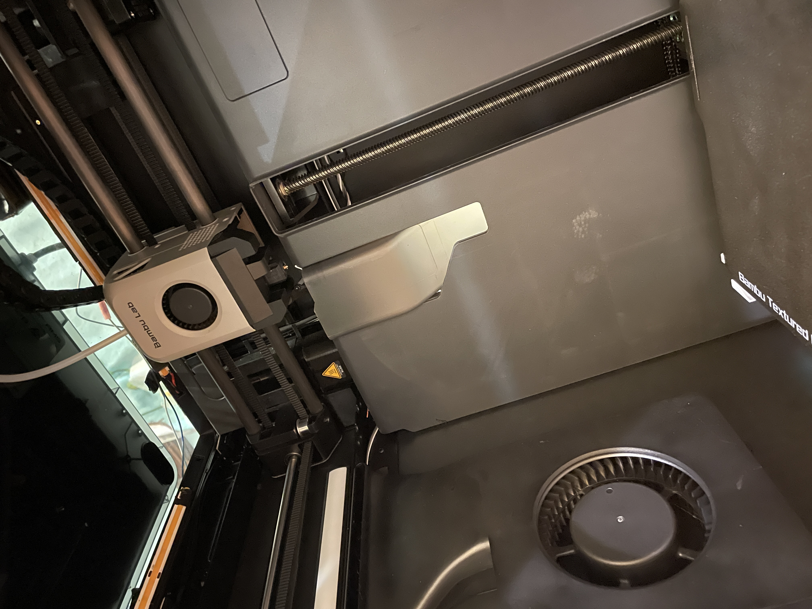

Voltage Divider
1. PROBLEM AND OBJECTIVE
Problem: The built-in light on the Bambu Lab P1S printer seemed too dim. A discarded homemade light was available, but it required 15 volts and there was no power supply for it.
Objective: Build a power source that could run the light and improve visibility around the printer.
2. TOOLS AND TECHNOLOGIES
Hardware, components and materials: Two 9-volt batteries, a 10 kΩ resistor, a 10 kΩ variable resistor (potentiometer), a switch, the homemade light and the Bambu Lab P1S printer.
Software and programming languages: None listed.
3. SOLUTION DESIGN AND DEVELOPMENT
The design used a voltage divider to adjust the battery output. The first wiring attempt was incorrect. In the revised wiring, the positive connection went to the battery and the ground connection went to the point between the two resistors. A switch was added to turn the system on and off before connecting it to the printer light.
4. CHALLENGES AND PROBLEM-SOLVING
The first circuit did not provide the intended output because it was wired incorrectly. The wiring was corrected before the system was connected to the printer.
5. TESTING AND RESULTS
The revised circuit powered the printer light.
6. LESSONS LEARNED AND FUTURE IMPROVEMENTS
The project provided hands-on practice with voltage-divider wiring and troubleshooting. A useful next step would be to record the output voltage and verify the light's performance under load.
7. INDIVIDUAL CONTRIBUTIONS AND RESOURCES
The circuit was built and corrected independently using a discarded light supplied by a family friend.
SUPPORTING MATERIALS
- [x] Project photographs - circuit and printer-light views are shown below.
- [x] Reference link - project PDF.


